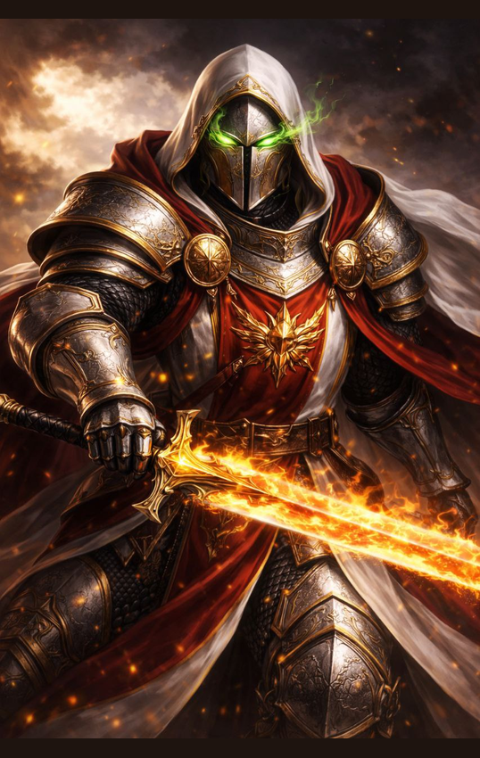

Человек
Дан является молодым паладином Фраустера, воспитанником капитана Анрирна и действующим владельцем Меча Воли. Несмотря на возраст, объект считается одним из наиболее перспективных воинов своего поколения.
Основой мировоззрения Дана является стремление к справедливости. Он искренне верит, что зло должно быть наказано, а сила обязана служить защите тех, кто не способен защитить себя самостоятельно.
При этом представления объекта о справедливости крайне зависимы от его эмоционального состояния. Дан способен соблюдать закон, даже когда испытывает сильную ненависть, однако почти никогда не прощает виновного.
После гибели матери стремление к правосудию начало постепенно смешиваться с жаждой мести. Потеря Анрирна окончательно закрепила в сознании объекта убеждение, что докаины должны быть уничтожены.
Дан воспринимает собственный гнев не как слабость, а как источник силы. Подобное отношение делает его особенно совместимым с Мечом Воли, который питается эмоциями владельца и усиливает их во время сражения.
Несмотря на склонность к жестокости, объект не утратил способность испытывать сострадание, привязываться к людям и подчинять личные желания долгу. Он дорожит памятью матери, уважает Анрирна и воспринимает генерала Гаса как последнего близкого ему человека.
Дан обладает исключительной верой. Даже находясь на грани смерти, он способен продолжать молитву и отвергать собственное поражение. Его сила основана не только на свойствах оружия, но и на абсолютной уверенности в правильности избранного пути.
Главная опасность объекта заключается в том, что Дан почти не видит границы между правосудием и возмездием. Пока эти понятия совпадают, он остаётся защитником. Если однажды они окончательно разделятся, объект может стать тем, с чем всю жизнь пытался бороться.
Дан представляет угрозу критического уровня. Даже без усиления Меча Воли объект является опытным мечником, лучником и подготовленным паладином.
Меч Воли значительно увеличивает физическую силу, скорость, выносливость и устойчивость владельца. Степень усиления зависит от интенсивности его эмоций.
При полной активации оружия глаза Дана воспламеняются зелёным огнём, по телу проходят светящиеся энергетические потоки, а клинок покрывается живым пламенем.
В данном состоянии объект способен создавать мощные ударные волны, отражать энергетические атаки и продолжать сражение после получения смертельных повреждений.
Паладин наиболее опасен, когда уверен в собственной правоте. Вера, ярость и воздействие Меча Воли взаимно усиливают друг друга, временно устраняя страх, боль и сомнения.
Главной слабостью объекта является зависимость от эмоций. Сильный гнев увеличивает его мощь, но одновременно снижает самоконтроль и делает поведение предсказуемым.
Дан хотел стать мечом правосудия.
Но мечи не решают, кого считать виновным.
Они лишь падают туда, куда направляет их рука.
И потому однажды важнее всего будет не то, насколько сильным он стал.
А то, кто останется внутри него, когда придёт время нанести последний удар.
Если ты дочитал это досье до конца, значит хотел узнать, кем был этот человек.
Но архивы умеют хранить лишь факты.
Истинную историю всегда приходится искать между строк.